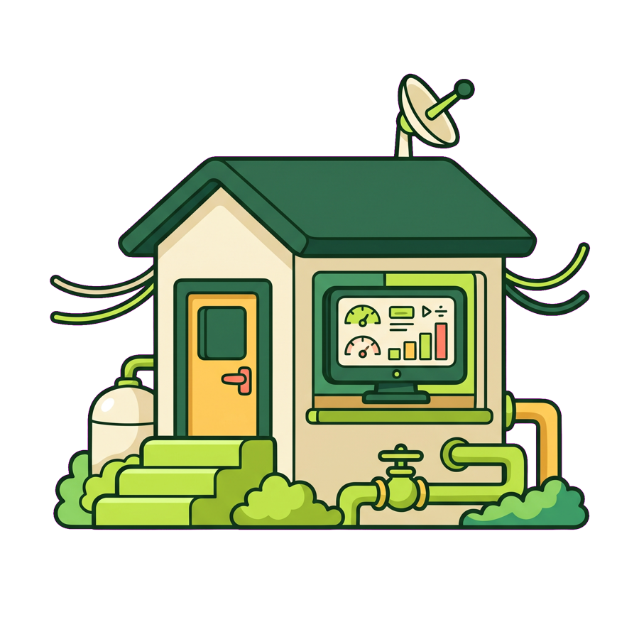
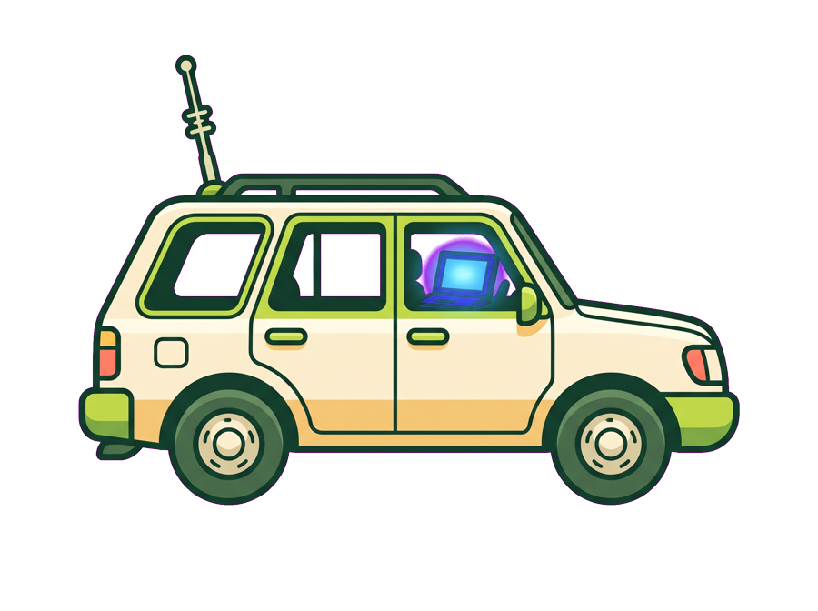
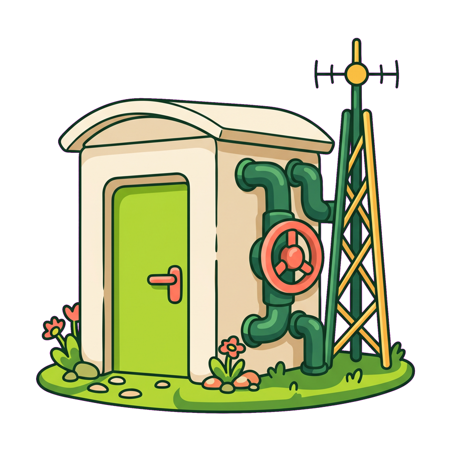
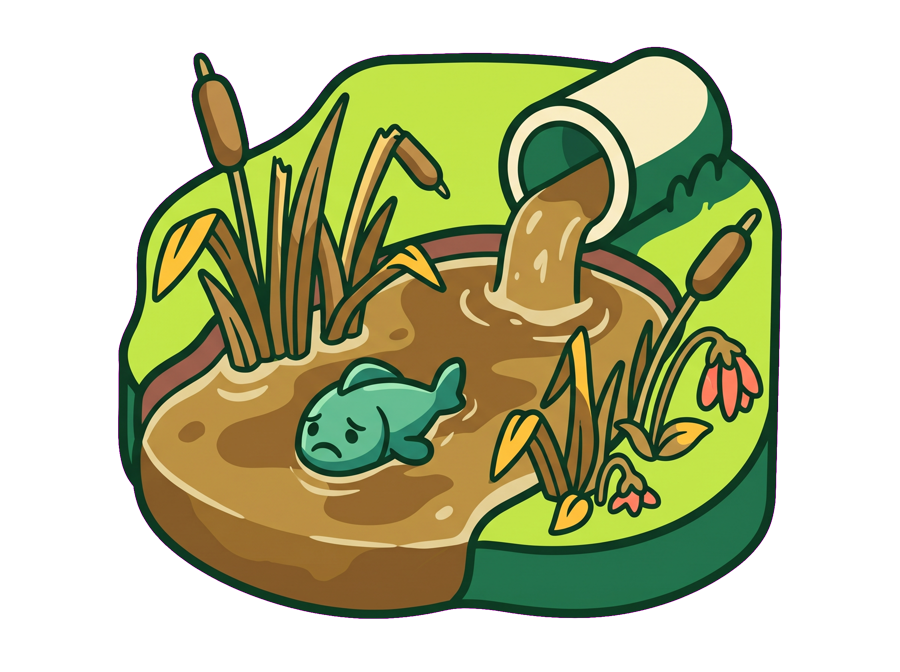
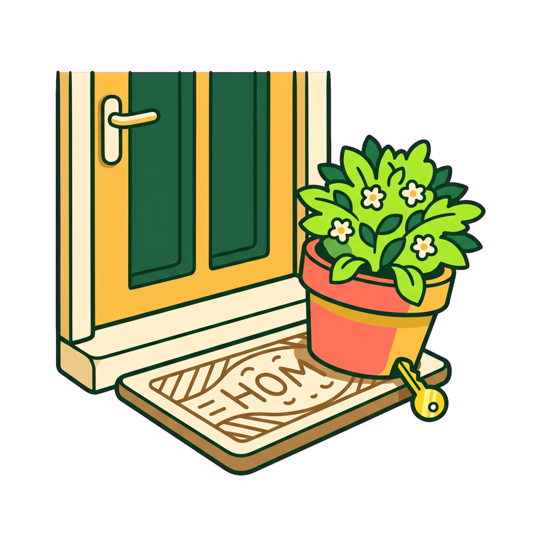
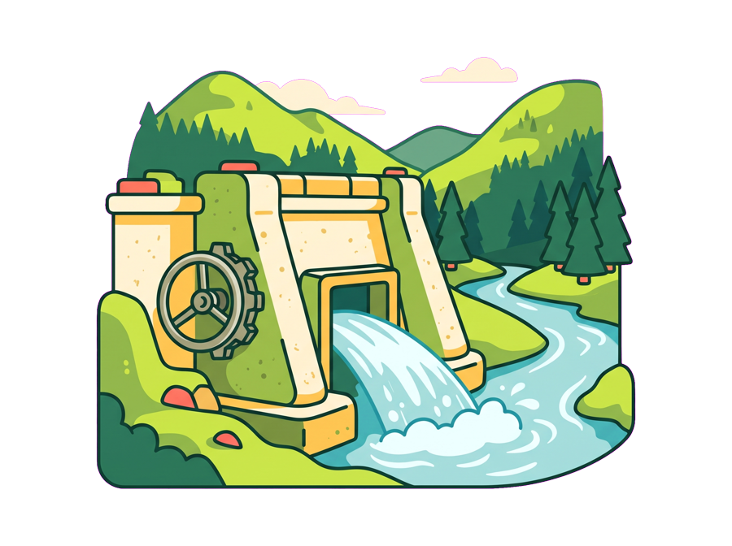

Ciberataques, daño ambiental y quién se hace cargo cuando el culpable es un hacker.
Luciano EstebanGestión Ambiental · UCEMA · Final 2026
Buenas. Soy Luciano, estudio Ingeniería en Informática y trabajo en ciberseguridad. En el parcial hablé de cuánto contamina el software. Hoy cambio por completo: les voy a contar de una vez en que alguien contaminó un río sin tocar una gota de agua. Lo hizo desde un auto. Y la pregunta que me interesa es jurídica: cuando el daño lo causa un hacker, ¿quién se hace cargo?
Imagen ilustrativa generada con IA
¿Un hacker puede contaminar un río?
Sí. Ya pasó, hace más de veinte años.
Pregunta al aula, esperar un segundo. Sí, ya pasó. Pensamos el hackeo como robo de datos o de plata. Pero hoy el agua, las cloacas y las represas se manejan con computadoras, y lo que se maneja con computadoras se puede manejar a distancia.
Más de 6 de cada 10 casas argentinas tiran la cadena a una red cloacal
62,6%
de las viviendas tiene cloaca, según el Censo 202212
Para que no suene a algo lejano de Australia. Según el Censo 2022 del INDEC, el 62,6 por ciento de las viviendas del país tiene desagüe a red cloacal. Seis de cada diez casas, y en la Ciudad casi el cien por ciento. Esas redes tienen bombas, válvulas y plantas que cada vez más se controlan a distancia. Y Argentina ya considera al agua una infraestructura crítica, con el impacto ambiental como uno de los criterios. O sea, esto también es nuestro.
Maroochy, Australia, año 2000
Simplificado para la clase

1
Lo instaló y se fue
Vitek Boden, un ingeniero de Queensland, Australia, ayudó a instalar el sistema. Pidió trabajo en el municipio y no lo tomaron.

2
Se quedó con las llaves
Tenía una radio, un equipo de control y el software para hablarle al sistema.

3
Se hizo pasar por una estación
Desde el auto, por radio, les daba órdenes a las bombas.

4
Las cloacas se desbordaron
El líquido cloacal terminó en parques, ríos y el terreno de un hotel.
El caso es Maroochy, en Queensland, Australia, y se los cuento simplificado en cuatro pasos. Uno: Vitek Boden, un ingeniero de Queensland, en Australia, trabajaba en la empresa que instaló el sistema de control de las cloacas. Renunció en diciembre de 1999, pidió trabajo en el municipio y no lo tomaron. Dos: tenía una radio, un equipo de control y el software del sistema. Tres: desde el auto, por radio, se hacía pasar por una estación de bombeo y les daba órdenes a las bombas. Cuatro: el líquido cloacal terminó en parques, ríos y hasta en el terreno de un hotel Hyatt.
La radio obedecía a cualquiera
Las bombas recibían órdenes por radio. No había ninguna defensa que preguntara quién las mandaba.
Es el cuento del tío: "Hola, soy la estación 4". En seguridad se llama spoofing.
Lo único técnico de la charla, y es simple. El centro de control hablaba por radio con las estaciones de bombeo. El estudio del caso dice que no había ninguna defensa de ciberseguridad: nada que verificara quién mandaba cada orden. aparece Boden. Es el cuento del tío: llama, dice "soy la estación 4" y le creen. En seguridad eso se llama suplantación. Ojo: no fue un descuido puntual, así se diseñaban casi todos estos sistemas en el 2000. Eso va a importar después.
Los números del caso
46
veces mandó órdenes por radio, entre febrero y abril de 20001 2
800.000 litros
Un tercio de una pileta olímpica1 2
Pileta olímpica: 2,5 millones de litros
2 años
de prisión. El día que lo detuvieron, apagó las alarmas de cuatro estaciones2 3
Soy de números, así que se los muestro. Cuarenta y seis veces mandó órdenes por radio, entre el 9 de febrero y el 23 de abril de 2000. Cada cuadradito es una. Volcó unos 800 mil litros de líquido cloacal, un tercio de una pileta olímpica. Ojo, otras fuentes hablan de millones de litros. Según la agencia ambiental de Queensland, murió vida marina, el agua del arroyo se puso negra y el olor era insoportable. El 23 de abril, el mismo día que lo detuvieron con el equipo en el auto, había apagado las alarmas de cuatro estaciones. En octubre de 2001 lo condenaron a dos años de prisión.
Al hacker lo condenaron. ¿Quién limpia el río?
A
El hackerÉl lo causó
B
El que operabaEl municipio o la empresa
C
NadieFue un tercero
Según la ley argentina: B, el que operaba
Salvo que demuestre que el ataque fue una verdadera sorpresa. Ahora les explico por qué.
Hagamos como en Duolingo. Al hacker lo condenaron en lo penal, pero el río sigue sucio. ¿Quién paga la limpieza? A, el hacker. B, el que operaba el sistema. C, nadie, porque fue un tercero. Dejar que el aula conteste. según la ley argentina, la respuesta es B, salvo que demuestre que fue una sorpresa. Esa es mi tesis, y ahora la justifico.
Si pasara en Argentina
Constitución, art. 41
Primero se recompone
El daño ambiental obliga, antes que nada, a dejar el ambiente como estaba.
Ley 25.675, art. 28
Responde quien causa el daño
Aunque no tenga culpa. Es responsabilidad objetiva.
Ley 25.675, art. 29
Única salida: un tercero
Pero solo si se tomaron todas las medidas para evitarlo.
"…acreditando que, a pesar de haberse adoptado todas las medidas destinadas a evitarlo y sin mediar culpa concurrente del responsable, los daños se produjeron por culpa exclusiva de la víctima o de un tercero por quien no debe responder."5
Llevemos el caso a la Argentina, paso a paso. la Constitución, artículo 41, dice que el daño ambiental genera prioritariamente la obligación de recomponer. la Ley General del Ambiente, artículo 28: el que causa el daño responde de forma objetiva, sin importar si tuvo culpa. el artículo 29 es la clave. La única salida es probar que fue un tercero, como un hacker. pero miren lo que exige: haber adoptado todas las medidas destinadas a evitarlo. No alcanza con decir "me hackearon". El Código Civil y Comercial va en la misma línea: el hecho de un tercero solo libera si funciona como un caso fortuito, artículos 1730 y 1731.
Las dos disciplinas giran alrededor de lo mismo: si se podía prever
Para el derecho, el caso fortuito es una sorpresa
Es el hecho que no pudo preverse, o que previsto no pudo evitarse6. Lo previsible no sirve como excusa.
Para la seguridad, el objetivo es que nadie se sorprenda
Así resume Adam Shostack el threat modeling: pensar qué puede salir mal antes de que pase7.
La idea central del trabajo. para el derecho, el caso fortuito es, en criollo, una sorpresa. Algo que no se pudo prever, o que se previó pero no se pudo evitar. en ciberseguridad hay una disciplina, el threat modeling o modelado de amenazas. La enseña Adam Shostack, con quien hice un curso hace unos días en San Francisco. Él dice que el objetivo es que nadie se sorprenda. El derecho pregunta si se podía prever, y la seguridad trabaja para preverlo.
Cuatro preguntas para que nadie se sorprenda
Es como la habilitación de bomberos de un local, pero para ataques: se hace antes, con método y por escrito.
1
What are we working on?
¿Qué estamos construyendo?
2
What can go wrong?
¿Qué puede salir mal?
3
What are we going to do about it?
¿Qué vamos a hacer al respecto?
4
Did we do a good job?
¿Hicimos un buen trabajo?
El método de Shostack son cuatro preguntas. Es como la habilitación de bomberos de un local, pero para ataques: antes de abrir, con método y por escrito. Uno, qué estamos construyendo: dibujar el sistema. Dos, qué puede salir mal. Tres, qué vamos a hacer al respecto. Cuatro, si hicimos un buen trabajo, que es revisar. Y Shostack dice que no es un interruptor, es un dial: siempre se hace y la intensidad depende del riesgo. En nuestra materia eso se llama proporcionalidad.
El threat model de Maroochy
1
Suplantación (spoofing)
Alguien de afuera dice "soy la estación 4".
2
Órdenes alteradas (tampering)
Las bombas hacen lo contrario de lo que deberían.
3
Un acceso que nunca se cortó
El que se fue sigue sabiendo entrar.
Qué hacer
Pedir identificación a cada orden, cortar accesos al que se va y alarmas si una bomba hace algo raro.
Así se ve un threat model, simplificado. Pregunta uno, qué construimos: control, radio, bombas y, al final, el río. La línea verde punteada es la frontera de confianza: de acá para adentro confiamos. Es como el guardia de la entrada de un barrio cerrado, y en Maroochy no había guardia. aparece el auto y cruza la frontera sin que nadie le pida nada. Pregunta dos, qué puede salir mal. uno, suplantación. dos, órdenes alteradas. tres, un acceso que nunca se cortó. Pregunta tres, qué hacer. pedir identificación a cada orden, cortar accesos al que se va y alarmas. Nada de esto exigía ser un genio, solo hacerse la pregunta.
Las respuestas de la seguridad ya tienen nombre en el derecho ambiental
TransferirPasarle el riesgo a otro, como un seguro.
Seguro ambientalLey 25.675, art. 22
AceptarConvivir con el riesgo, por escrito.
Responder si pasaLey 25.675, art. 28
Lo que más me sorprendió armando el trabajo. La pregunta tres de Shostack tiene cuatro respuestas posibles, y las cuatro ya existen en el derecho ambiental con otro nombre. eliminar el riesgo es prevención, artículo 4. Mitigar es la mejora continua que vimos con cuencas: planificar, hacer, verificar, actuar. Transferir es el seguro ambiental del artículo 22. Y aceptar el riesgo está bien, pero si pasa, respondés, artículo 28. Son las mismas herramientas con otro nombre.
Veinticinco años con la misma puerta abierta
2000
Maroochy, Australia
Órdenes por radio sin ninguna defensa.2
2021
Oldsmar, EE.UU.
Se informó un ataque al agua potable. En 2023 se dijo que fue un error de un empleado.8

2023
Aliquippa, EE.UU.
Atacaron equipos de agua que usaban la contraseña de fábrica: 1111.9

2025
Bremanger, Noruega
Abrieron al 100 % la válvula de una represa, unas 4 horas. Contraseña débil.10
Usar la contraseña de fábrica es dejar la llave abajo de la maceta. Todos saben dónde buscar.
Este es el centro del argumento. 2000, Maroochy. 2021, Oldsmar, Florida. Se informó que alguien subió la soda cáustica del agua potable de 100 a 11.100 partes por millón. En 2023, un ex administrador de la ciudad dijo que fue un error de un empleado, así que lo marco gris y no lo uso como prueba. 2023, Aliquippa, Pensilvania. Un grupo vinculado a Irán atacó equipos de plantas de agua que tenían la contraseña de fábrica, 1111. 2025, Noruega. Abrieron al cien por ciento la válvula de una represa durante unas cuatro horas, por una contraseña débil según el gerente técnico. usar la contraseña de fábrica es dejar la llave abajo de la maceta. Veinticinco años, la misma puerta abierta.
Imagen ilustrativa generada con IA
Abril de 2025: alguien abrió a distancia una represa en Noruega
La válvula quedó abierta al 100 % unas cuatro horas. Según el gerente técnico, entraron por una contraseña débil.10
El caso más reciente. El 7 de abril de 2025, en Bremanger, al oeste de Noruega, alguien entró al panel remoto de una represa y abrió una válvula al cien por ciento. Estuvo así unas cuatro horas hasta que lo notaron. El gerente técnico dijo que fue por una contraseña débil. En agosto, la inteligencia noruega se lo atribuyó a hackers prorrusos. No hubo daño ambiental, pero muestra que la puerta sigue abierta.
No es un problema del 2000
Sistemas de agua inspeccionados por la EPA que no cumplían lo básico de ciberseguridad
Estados Unidos, inspecciones desde septiembre de 2023
+70%
Contraseñas por defecto, sin doble factor, planes incompletos11
Agua liberada, medida en piletas olímpicas
Una pileta olímpica tiene 2,5 millones de litros
Maroochy, 2000 · cloacal 0,3 piletas
Noruega, 2025 · agua limpia casi 3 piletas*
* 497 litros por segundo de más durante unas 4 horas: unos 7,2 millones de litros10. No se informó daño ambiental.
Por si alguien piensa que esto es cosa del pasado. En mayo de 2024 la Agencia de Protección Ambiental de Estados Unidos informó que más del 70 por ciento de los sistemas de agua que inspeccionó no cumplía requisitos básicos de ciberseguridad: contraseñas por defecto, sin doble factor de autenticación, planes incompletos. A la derecha, en piletas olímpicas: Maroochy fue un tercio de pileta de líquido cloacal. En Noruega, 497 litros por segundo de más durante unas cuatro horas son unos 7,2 millones de litros, casi tres piletas. Aclaro que en Noruega era agua limpia y no se informó daño ambiental, pero muestra cuánto se puede mover a distancia.
Mi conclusión: la respuesta cambia con el tiempo
En 2000
Pudo ser una sorpresa
Casi nadie protegía estos sistemas. Se podía discutir la eximente del tercero.
Hoy
Ya no lo es
El riesgo se conoce hace 25 años. El que opera responde, recompone y después le reclama al atacante.
CondicionarQue el agua, las cloacas y las represas presenten un threat model, como presentan una evaluación de impacto.
ProporcionalMás intensidad donde el daño puede ser mayor, como quien gira una perilla.
RevisadoEscrito, revisado por otros y actualizado. Es la mejor prueba de "todas las medidas".
Mi conclusión personal. en el 2000, Maroochy podía discutir que fue una sorpresa, casi nadie protegía estos sistemas. hoy no. El riesgo se conoce hace veinticinco años, así que no hay caso fortuito. El que opera responde, recompone el río y después le reclama al atacante. No propongo frenar la digitalización del agua, que tiene muchos beneficios. Propongo autorizar razonablemente, como dijo la Corte en Diaguita de Andalgalá, con tres condiciones. que la infraestructura que puede dañar el ambiente presente un threat model, como presenta una evaluación de impacto. Argentina ya lista al agua como infraestructura crítica, resolución 1523 de 2019. proporcional al riesgo. escrito y revisado, porque es la mejor prueba de que se adoptaron todas las medidas.
Lo que no pude medir
Las cifras varían. Los litros de Maroochy van de 800 mil a millones según la fuente.
Oldsmar sigue en duda. Por eso no lo uso como prueba.
No encontré un fallo argentino sobre daño ambiental por ciberataque. Aplico la ley a un caso nuevo.
El threat model no es un salvoconducto. En actividades riesgosas, cumplir técnicas de prevención no exime (CCyC, art. 1757). Es lo mínimo para poder discutir la eximente.
¿Es justo que pague el que fue atacado?
Mi opinión: sí, si dejó la puerta abierta. El río no puede esperar a que encuentren al culpable. Y el que opera es el único que podía cerrar la puerta antes.
Límites honestos. Las cifras de Maroochy van de 800 mil litros a millones según la fuente. Oldsmar quedó en duda. No encontré un fallo argentino sobre daño ambiental causado por un ciberataque, así que aplico la ley a un caso nuevo. Y un matiz que encontré investigando: el artículo 1757 del Código Civil dice que, en actividades riesgosas, cumplir las técnicas de prevención no exime. O sea, el threat model no es un salvoconducto. Es el piso mínimo para siquiera discutir la eximente. Les dejo el dilema que me sigue dando vueltas: ¿es justo que pague el atacado? mi respuesta es sí, si dejó la puerta abierta. El río no puede esperar a que encuentren al culpable.
Imagen ilustrativa generada con IA
Que la próxima vez no sea una sorpresa
Gracias. ¿Preguntas?
Cierro con esto. Boden fue preso, pero el arroyo lo limpió otro. En seguridad trabajamos para que nada nos sorprenda, y el derecho ambiental ya tiene las herramientas para exigir lo mismo a quien opera el agua. Que la próxima vez no sea una sorpresa. Muchas gracias, ¿preguntas?
Fuentes
MITRE ATT&CK for ICS, "Maroochy Water Breach", campaña C0020. attack.mitre.org
Abrams, M. y Weiss, J. (2008). Malicious Control System Cyber Security Attack Case Study: Maroochy Water Services, Australia. NIST y MITRE, presentado en ACSAC. acsac.org
The Register (31/10/2001), "Hacker jailed for revenge sewage attacks". theregister.com